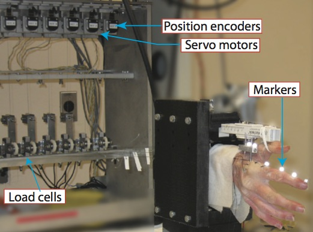
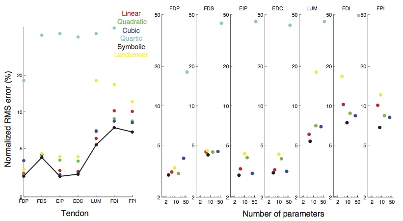
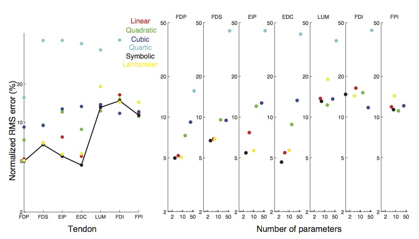

Modeling environment to simulate fingertip force production in the human finger
Goal
Develop a solver that can simulate the mechanical interactions of elastic tendon networks with arbitrarily shaped bones. This solver can then be used to model the human finger and determine fingertip force for different input muscle tensions, different tendon network topologies and parameter values.
Background
Existing models of the human finger are not functionally accurate. My conference abstract from the American Society of Biomechanics Conference, 2011 can be found here.
Control of finger movement and force is made possible by a complex network of tendons.
Analytical functions modeling tendon excursions are useful for building robotic and prosthetic hands and understanding control of finger movement.
Hypothesis: Simultaneous extraction of form and parameters of functions directly from experimental data will give us more functionally
accurate representations as opposed to assumption of form for the expression apriori.
Experimental data

A dataset consisting of tendon excursions(output variable) and joint angles (features) were obtained using human cadaveric hands: Tendon excursions were recorded and joint angles calculated from 3D positions of motion capture markers.
Regression: Model inference
Symbolic regression as implemented in the software Eureqa was used to regress
mathematical functions of the form s = f(theta1, theta2, theta3 and theta4) for each tendon.
The functional accuracy of the models was compared to that of vanilla polynomial regression and Landsmeer models on cross-validation datasets.
Results
Below is a comparison of prediction accuracy and number of parameters on cross-validation datasets: Symbolic regression vs. Polynomial vs. Landsmeer model

a) Mean of normalized RMS errors of the different models across two movement trials from the same cadaveric specimen.
The best symbolic regression function (picked from the family of functions generated) had lower
errors across the two trials compared to the polynomial regressions and the Landsmeer based models.
(b) Normalized RMS errors vs. the number of parameters in the functions generated using the different techniques. Symbolic regression expressions had fewer parameters and lower RMS errors compared to the other functions.

(a) Mean of normalized RMS errors of the different regressions across two movement trials from
two different cadaveric specimens. The models were all trained on dataset from one specimen but uniformly scaled when tested on the other specimen.
The best symbolic regression model (picked from the family of functions generated) had lower mean errors across the specimens, compared to the other functions.
(b) Normalized RMS errors vs. the number of parameters in the models generated using the different techniques.
Symbolic regression expressions had fewer parameters and lower RMS errors compared to the other models.